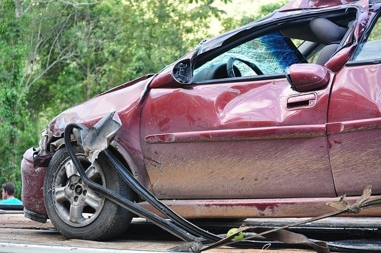
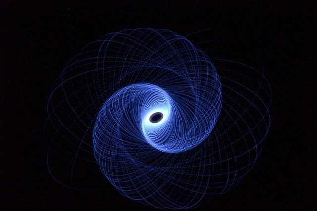

バレリュー症候群の鍼灸
むち打ち後の頸部自律神経の乱れによるバレリュー症候群に対し、医療機関での精査を前提に首周囲の深層筋と自律神経を整えます。
まず知っておきたい要点と改善の流れ
バレリュー症候群は、交通事故などのむち打ち損傷をきっかけに、頸部を通る交感神経などの自律神経が直接的・間接的に刺激・過緊張を起こすことで多様な不調が現れる症候群です。頭痛やしびれだけでなく、めまい・耳鳴りといった耳症状、かすみ目や眼精疲労などの眼症状、声のかすれや嚥下違和感などの咽喉頭症状、さらに動悸や息苦しさなど心臓・呼吸器様症状まで幅広く生じます。自己判断せず、まず医療機関で外傷や他疾患を除外し、星状神経節ブロック等を含めた治療方針を確認することが大切です。（公式解説）
このようなお悩みはありませんか？
- ✓交通事故などのむち打ち後から頭痛や強い倦怠感が続いている
- ✓めまい・耳鳴り・耳の閉塞感など耳の不調が現れた
- ✓目のかすみ・眼精疲労や、喉の違和感・声のかすれがある
- ✓胸の痛み、動悸、息苦しさ、集中力低下など多彩な症状がある
当院の施術アプローチ・改善の流れ
なぜ鍼灸で改善へ向かうのか？（作用機序の図解）
バレリュー症候群に対する鍼灸は、脳循環・三叉神経血管系と神経可塑性の調整機序を通じて、お体本来の回復力を引き出します。

百会・風池・合谷などの経穴刺激が三叉神経や大後頭神経・体性感覚路へ穏やかに作用します。
脳幹の自律神経中枢やセロトニン・GABA系のバランスを整え、神経の過敏発火を鎮めます。
後頭下筋群や首深部のこわばりを解き、頭部・内耳・顔面周囲の血流環境をサポートします。
神経回路の再学習（可塑性）と睡眠の質を高め、専門医の治療やリハビリの土台を支えます。
院長YouTube解説・関連動画
公開日：２０２１年 ３月２３日
更新日：２０２１年 ６月１０日
本日はバレリュー症候群について解説させていただきます。

☆本記事の内容
- •バレリュー症候群とは
- •バレリュー症候群の原因
- •バレリュー症候群の症状
- •バレリュー症候群の改善方法
- •バレリュー症候群のまとめ
- •バレリュー症候群は、むち打ち事故の後に起こる自律神経の失調症状
- •バレリュー症候群の原因は、交通事故などで起こるむち打ち動作
- •バレリュー症候群の症状は、主に自律神経の失調症状
- •改善には、星状神経節のブロック注射を行う
- •頭痛だけで判断しない
銀座そうぜん鍼灸院の宗前です。
このページを書いている私は、鍼灸師として１３年、担当した利用者様数８０，０００人を誇り、病気の休職者３００人を社会復帰できるまで回復させてきた実績があります。
バレリュー症候群の症状は、主に自律神経の失調症状
バレリュー症候群の症状は、主に自律神経の失調症状です。眼、耳、心臓、咽頭部などに現れる異常がバレリュー症候群の症状なのです。
耳に現れる症状には、めまいや耳鳴り、耳づまりなどがあります。眼に現れる症状は、眼のかすみや疲れ、視力の低下などです。眼精疲労が起こることもあります。
咽喉頭部に現れる症状は、声のかすれや喉の違和感、嚥下困難などで、心臓に現れる症状は、心臓部の痛みや脈の乱れ、息苦しさなどです。頭痛や疲労感、だるさやしびれなどもおこります。注意力が散漫することもあります。
バレリュー症候群の改善方法は、むち打ち症の改善を行うことが原則です。しかし、むち打ち症の改善方法と違う点もあります。
それは、星状神経節のブロック注射を行うことです。星状神経節のブロック注射は、バレリュー症候群に効果的であると言われています。
星状神経節のブロック注射は、星状神経節の周りに行う局所麻酔剤を注射することで交感神経節の働きに作用するため、症状の改善に期待できるのです。
バレリュー症候群の改善ではむち打ち症の改善では使わない抗交感神経薬であるαブロッカーを使うことがあるということも、むち打ち症の改善方法と違う点です。
交通事故で起こる１番多い症状は、むち打ち動作による首の痛みです。しかし、むちうち動作で頸部を痛めた場合は、首の痛みと同時に頭痛や肩や腕の痛みが現れることも非常に多いです。
むち打ちで頸部に損傷が起こった場合の頸椎捻挫では、首だけが痛みを感じるのではなく、肩や腕に痛みを感じたり、頭痛が起こったりするものです。
そのため、頭痛があるからと言って、自律神経失調症状が現れたと考えることは判断が早いと思われます。
交通事故にはいろいろなケースがあるため、自律神経失調症状による頭痛が起きることもありますが、頭痛が起こったからバレリュー症候群であるというわけではありません。きちんと病院で判断してもらうことをお勧めいたします。

メニエール病・難治性めまい・耳鳴りのツボ図解
実際の施術ではお一人おひとりの体質・症状に合わせて選穴しますが、メニエール病・前庭性片頭痛・耳鳴り・難治性めまいの内耳循環ケアの臨床でよく用いられる代表的なツボの目安です。

📌 代表的なツボの詳細一覧表を開く（6穴） ▼
| ツボ名 | 位置の目安 | 主な狙い | セルフケアの注意点 |
|---|---|---|---|
| 聴宮（ちょうきゅう） | 耳の穴の前、口を開けるとくぼむ場所 | 内耳周囲の微小循環改善・耳閉感や耳鳴りケア | 強く押さず口を少し開けて優しく触れます。 |
| 翳風（えいふう） | 耳たぶのすぐ後ろのくぼみ | 内耳・三叉神経・顔面周囲の血流とリンパ循環促進 | めまい発作直後は首を動かさず静かに温めます。 |
| 風池（ふうち） | 後頭部の生え際のくぼみ | 後頭下筋群の緊張緩和・椎骨動脈血流サポート | 親指で上向きに優しく支えるように押します。 |
| 完骨（かんこつ） | 耳の後ろの出っ張った骨の下後ろ | 平衡感覚の安定・睡眠の質改善 | 左右の張りを比べながら優しく緩めます。 |
| 内関（ないかん） | 手首の横ジワから指3本分肘寄りの中央 | めまいに伴う吐き気・自律神経発作の鎮静 | めまいが出そうなときのセルフ指圧にも有効です。 |
| 太衝（たいしょう） | 足の甲、親指と人差し指の骨の間 | ストレス性の内リンパ水腫悪化・イライラの緩和 | 深呼吸と合わせて3〜5秒ずつ押します。 |
国際査読論文の科学的エビデンス
国際的な医学データベース（PubMed・Cochrane等）で報告されているメニエール病・前庭性片頭痛・耳鳴り・難治性めまいの内耳循環ケア領域の代表的な査読済み鍼灸研究をまとめています（標準治療との併用や研究上の限界を含めて正確に掲載）。
📚 査読論文データ・PubMed出典リンクを開く（4件） ▼
| 年・研究デザイン | 対象・規模 | 主な結果 | 限界・出典 |
|---|---|---|---|
| 2016年 Cochraneレビュー | 反復性片頭痛 22 RCTs（n=4,985） | 無治療比で頻度半減41% vs 17%（RR 2.40）、予防薬比3か月57% vs 46%（RR 1.24）かつ副作用脱落OR 0.27と優位。 | 1年以上の長期検証は不足。 Cochrane (PMID: 27351677) |
| 2016年 Cochraneレビュー | 脳卒中後リハ 31 RCTs（n=2,257） | 通常リハ併用でBarthel Index（MD 9.19）・Fugl-Meyer（MD 6.16）・嚥下・疼痛改善を示唆、重篤な有害事象なし。 | GRADE低〜非常に低。標準リハビリの補完として位置づけ。 Cochrane (PMID: 27562656) |
| 2024年 シャム対照RCT | パーキンソン病の睡眠障害 78名解析 | 抗PD薬併用下でPDSS睡眠尺度が4週時+19.75点・8週時+20.24点とシャム比有意改善（P<0.001）。 | 単施設・小規模・8週間追跡。標準薬併用が前提。 JAMA Netw Open (PMID: 38922617) |
| 2013年 多施設RCT | ベル麻痺（顔面神経麻痺）338名（ステロイド併用） | 6か月時の顔面神経機能回復は得気手技群が対照鍼群より優位（調整OR 4.16）、QOLも改善。 | 全例プレドニゾン併用。急性期の過剰顔面通電は回避配慮。 CMAJ (PMID: 23439629) |
参考文献・出典
- 銀座そうぜん鍼灸院「バレリュー症候群の公式解説ページ」
- 2016年 Cochraneレビュー（反復性片頭痛 22 RCTs（n=4,985））— Cochrane (PMID: 27351677)
- 2016年 Cochraneレビュー（脳卒中後リハ 31 RCTs（n=2,257））— Cochrane (PMID: 27562656)
- 2024年 シャム対照RCT（パーキンソン病の睡眠障害 78名解析）— JAMA Netw Open (PMID: 38922617)
- 2013年 多施設RCT（ベル麻痺（顔面神経麻痺）338名（ステロイド併用））— CMAJ (PMID: 23439629)
よくある質問（FAQ）
Q. むち打ち後の頭痛だけですが、バレリュー症候群でしょうか？▼
Q. 病院でのブロック注射やリハビリと並行して鍼灸を受けられますか？▼
あわせて読まれる関連疾患（脳神経のお悩み）
脈打つ強い痛みや光・音への過敏を伴う片頭痛に対し、首肩の深層筋と自律神経を整えて発作頻度と負担の軽減を目指します。
頭を動かした瞬間の回転性めまいに対し、首肩の緊張緩和と内耳循環・自律神経調整、寝返り運動で再発予防を支援します。
末梢性顔面神経麻痺に対し、早期の医療機関受診を最優先としたうえで、顔面の血流促進と後遺症予防を支援します。
硬膜の傷から髄液が漏れる脳脊髄液漏出症に対し、ブラッドパッチ等の専門治療を絶対最優先とし、安定期の回復を補完的に支えます。
自分の体臭や口臭で周囲に迷惑をかけていると過度に悩み続ける状態。精神科・心療内科の専門治療を最優先に、安定期の緊張緩和を支えます。
幻覚や思考の著しい乱れを伴わず固定的な妄想が1か月以上続く精神疾患。精神科での専門治療を最優先に、安定期の不安・不眠ケアを支えます。
おひとりで悩まず、まずはご相談ください
銀座本院・川口・大宮・横浜・博多・田無の各院でご予約を承っております。